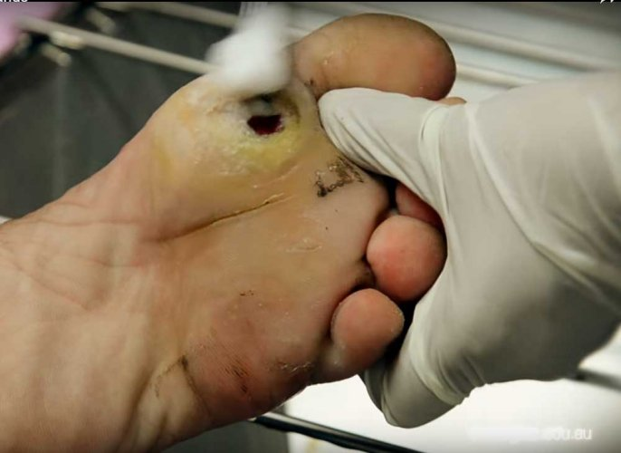

Nearly all cases of tetanus occur in people who have never been vaccinated or in adults who haven't kept up with their 10-year booster shots. You can't catch tetanus from a person who has it.
Tetanus cases have developed from the following:
Complications of tetanus infection may include:
Common signs and symptoms of tetanus include:
Possible other signs and symptoms include:
When to see a doctor
See your doctor for a tetanus booster shot if you haven't had a booster shot within the past 10 years, or you have a deep or dirty wound and you haven't had a booster shot in five years. If you aren't sure of when you received your last booster, get a booster.Wound care
It's essential to clean the wound to prevent the growth of tetanus spores. This involves removing dirt, foreign objects and dead tissue from the wound.Medications
Other drugs: Other medications, such as magnesium sulfate and certain beta blockers, might be used to regulate involuntary muscle activity, such as your heartbeat and breathing. Morphine might be used for this purpose as well as sedation.
Supportive therapies If you have a severe tetanus infection, you'll often need to stay in an intensive care setting. Since sedatives can inhibit breathing, you might temporarily need a ventilator. In order to survive a tetanus infection, the maintenance of an airway and proper nutrition are required. An intake of 3,500 to 4,000 calories and at least 150 g of protein per day is often given in liquid form through a tube directly into the stomach (percutaneous endoscopic gastrostomy), or through a drip into a vein (parenteral nutrition). This high-caloric diet maintenance is required because of the increased metabolic strain brought on by the increased muscle activity. Full recovery takes 4 to 6 weeks because the body must regenerate destroyed nerve axon terminals.